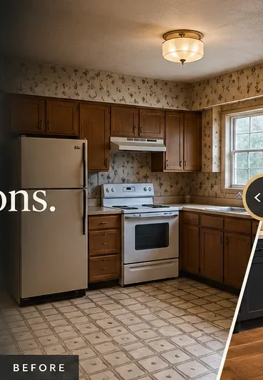
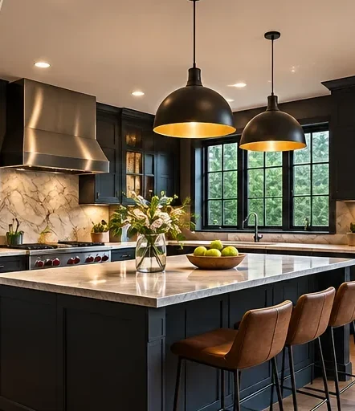

Discovery
Review the condition and goals
Transformation-led design that puts the work itself at the center.
Compare a project

BEFOREAFTERThe gallery is interactive, and the before-and-after slider above is a real HTML control.
A real renovation site should explain its process, schedule, what is included, and what the homeowner can expect.
Review the condition and goals
Document requirements and practical constraints
Build with clear communication
Share the kind of change you are considering.
Explore the sample inquiry process. This form never sends, saves, or schedules anything.